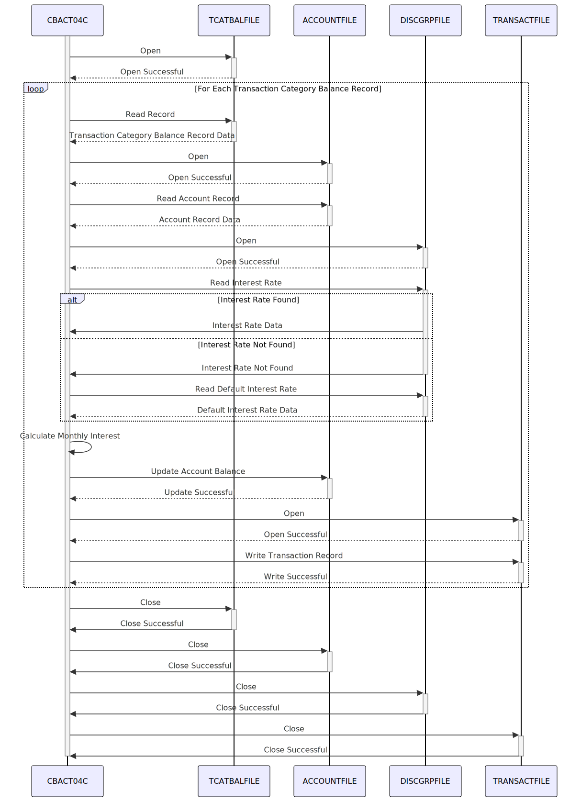

Gerado em: 1º de outubro de 2024
Título do Documento: CardDemo Cálculo de Juros - Especificação de Processamento em Lote
Descrição Resumida:
O programa CardDemo Cálculo de Juros é um processo em lote que calcula e aplica juros mensais às contas de cartão de crédito dos clientes. O cálculo é baseado no grupo da conta do cliente, categoria da transação e taxas de juros predefinidas. O programa lê os detalhes da transação do TCATBAL-FILE (Arquivo de Saldo da Categoria de Transação), recupera as informações da conta do ACCOUNT-FILE (Arquivo Mestre da Conta) e obtém as taxas de juros do DISCGRP-FILE (Arquivo do Grupo de Divulgação). Para cada categoria de transação, o programa calcula os juros mensais e atualiza o saldo da conta do cliente de acordo. Ele também gera registros de transação para cada aplicação de juros, que são gravados no TRANSACT-FILE (Arquivo de Transação).
Histórias do Usuário: Como analista de operações financeiras, preciso de um sistema que calcule e aplique automaticamente juros mensais às contas de cartão de crédito dos clientes para garantir uma cobrança precisa e geração de receita.
Épico Relacionado: 4 - Processamento de Transações
Requisitos Técnicos:
TCATBAL-FILE sequencialmente.
TCATBAL-FILE contendo FD-TRAN-CAT-BAL-RECORD.FD-TRANCAT-ACCT-ID, FD-TRANCAT-TYPE-CD e FD-TRANCAT-CD.FD-TRANCAT-ACCT-ID exclusivo, recupere os detalhes da conta do ACCOUNT-FILE.
FD-TRANCAT-ACCT-ID dos dados de saldo da categoria de transação.ACCOUNT-FILE usando FD-TRANCAT-ACCT-ID como chave.ACCT-GROUP-ID e ACCT-CURR-BAL do ACCOUNT-RECORD recuperado.ACCT-GROUP-ID, ACCT-CURR-BAL e outros dados relevantes da conta.ACCT-GROUP-ID, FD-TRANCAT-TYPE-CD e FD-TRANCAT-CD, busque a taxa de juros aplicável no DISCGRP-FILE.
ACCT-GROUP-ID, FD-TRANCAT-TYPE-CD e FD-TRANCAT-CD das etapas anteriores.DISCGRP-FILE usando a combinação de ACCT-GROUP-ID, FD-TRANCAT-TYPE-CD e FD-TRANCAT-CD como chave.DIS-INT-RATE.23), tente novamente usando 'DEFAULT' como o ACCT-GROUP-ID.DIS-INT-RATE (taxa de juros).Juros Mensais = (Saldo da Categoria de Transação * Taxa de Juros) / (12 * 100)TRAN-CAT-BAL (de FD-TRAN-CAT-BAL-RECORD) e DIS-INT-RATE.WS-MONTHLY-INT (juros mensais calculados).ACCOUNT-FILE adicionando os juros mensais calculados.
WS-MONTHLY-INT e ACCT-CURR-BAL.WS-MONTHLY-INT a ACCT-CURR-BAL.ACCT-CURR-CYC-CREDIT e ACCT-CURR-CYC-DEBIT para zero.ACCOUNT-RECORD correspondente no ACCOUNT-FILE.ACCOUNT-FILE atualizado com o novo saldo.TRANSACT-FILE.
TRAN-ID, TRAN-TYPE-CD, TRAN-CAT-CD, TRAN-SOURCE, TRAN-DESC, TRAN-AMT, TRAN-CARD-NUM, TRAN-ORIG-TS e TRAN-PROC-TS.TRAN-ID exclusivo.TRAN-TYPE-CD como '01' (juros), TRAN-CAT-CD como '05' (juros) e TRAN-SOURCE como 'Sistema'.TRAN-DESC como 'Int. para a/c ' concatenado com o ACCT-ID.TRAN-AMT como o WS-MONTHLY-INT calculado.TRAN-CARD-NUM do CARD-XREF-RECORD.TRAN-ORIG-TS e TRAN-PROC-TS.TRAN-RECORD no TRANSACT-FILE.TRANSACT-FILE com o novo registro de transação de juros.Modelos Relacionados:
FD-TRAN-CAT-BAL-RECORD: Representa um registro no Arquivo de Saldo da Categoria de Transação (TCATBAL-FILE).
FD-TRANCAT-ACCT-ID (Numérico(11)): Identificador da Conta.FD-TRANCAT-TYPE-CD (Alfanumérico(2)): Código do Tipo de Transação.FD-TRANCAT-CD (Numérico(4)): Código da Transação.FD-FD-TRAN-CAT-DATA (Alfanumérico(33)): Dados adicionais do saldo da categoria de transação.ACCOUNT-RECORD: Representa um registro de conta do cliente no Arquivo Mestre da Conta (ACCOUNT-FILE).
FD-ACCT-ID (Numérico(11)): Identificador da Conta.FD-ACCT-DATA (Alfanumérico(289)): Outros dados relacionados à conta, incluindo saldo, ID do grupo, etc.DIS-GROUP-RECORD: Representa um registro no Arquivo do Grupo de Divulgação (DISCGRP-FILE).
FD-DIS-ACCT-GROUP-ID (Alfanumérico(10)): Identificador do Grupo da Conta.FD-DIS-TRAN-TYPE-CD (Alfanumérico(2)): Código do Tipo de Transação.FD-DIS-TRAN-CAT-CD (Numérico(4)): Código da Transação.FD-DISCGRP-DATA (Alfanumérico(34)): Dados adicionais do grupo de divulgação.TRAN-RECORD: Representa um registro de transação no Arquivo de Transação (TRANSACT-FILE).
FD-TRANS-ID (Alfanumérico(16)): Identificador da Transação.FD-ACCT-DATA (Alfanumérico(334)): Dados relacionados à transação.Configurações:
TCATBAL-FILE: Caminho para o Arquivo de Saldo da Categoria de Transação.XREF-FILE: Caminho para o Arquivo de Referência Cruzada.ACCOUNT-FILE: Caminho para o Arquivo Mestre da Conta.DISCGRP-FILE: Caminho para o Arquivo do Grupo de Divulgação.TRANSACT-FILE: Caminho para o Arquivo de Transação.'DEFAULT''01''05''Sistema'Melhorias de Código:
Melhorias de Segurança:
Diagrama Conceitual:
–Made by “Smart Engineering” (by Compass.UOL)–